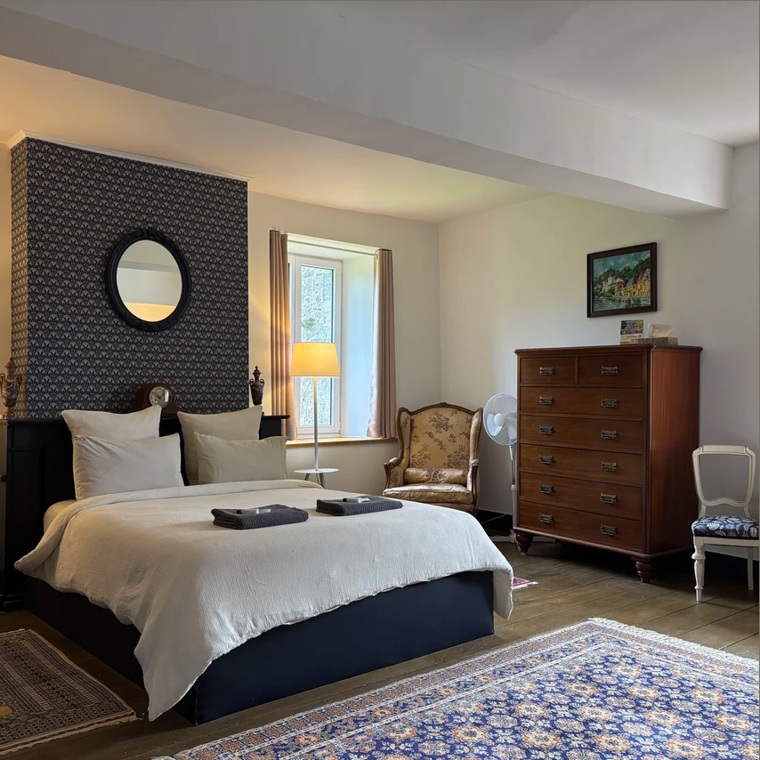
L'Échappée Belle
Sixt-sur-Aff
4 Rue des Templiers, 35550 Sixt-sur-Aff · 06 26 01 06 41
15 personnes · 5 chambres de 2 à 4 personnes
150 à 300 € / nuit — petit déjeuner compris
10 min de l'église · 7 min du château
Voir le site →POUR VOUS LOGER PRÈS DU CHÂTEAU
Une sélection d'adresses autour du Château de Bézyl, du gîte cosy à l'hôtel de charme. Les distances indiquées sont depuis l'église (cérémonie) et depuis le château (réception).

Sixt-sur-Aff
4 Rue des Templiers, 35550 Sixt-sur-Aff · 06 26 01 06 41
15 personnes · 5 chambres de 2 à 4 personnes
150 à 300 € / nuit — petit déjeuner compris
10 min de l'église · 7 min du château
Voir le site →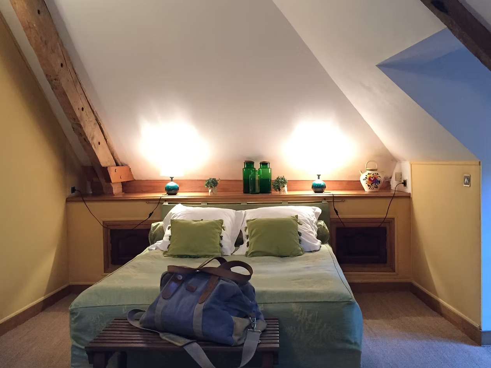
Sixt-sur-Aff
3 Pommery, 35550 Sixt-sur-Aff · 02 99 70 07 40
6 personnes · 3 chambres de 2 personnes
92 € / nuit — petit déjeuner compris
10 min de l'église · 4 min du château
Voir le site →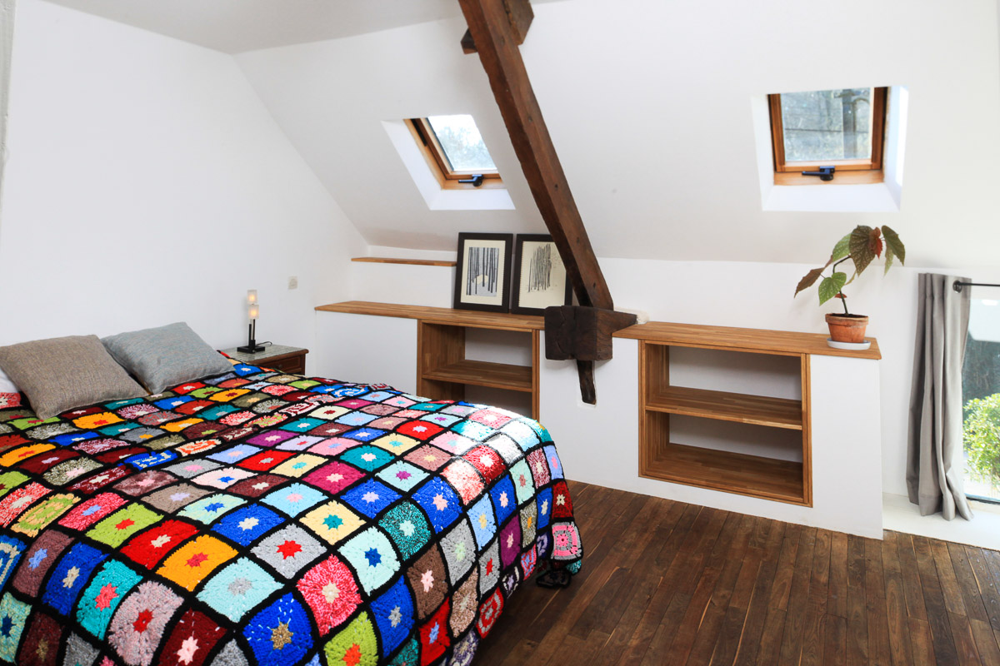
Bains-sur-Oust
26 La Coudrais, 35600 Bains-sur-Oust · 06 77 06 40 79
4 personnes · 1 lit double + 2 lits simples
119 € / nuit
12 min de l'église · 5 min du château
Voir le site → Réserver sur Airbnb →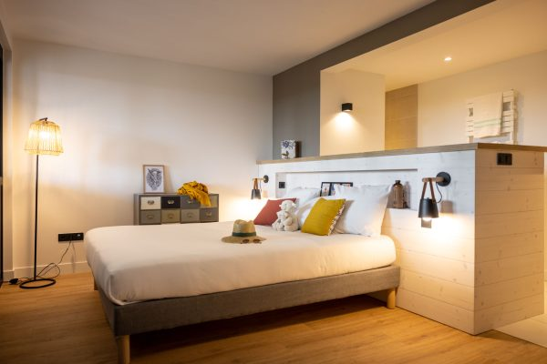
La Gacilly
19 Chem. de la Bergerie, 56200 La Gacilly · 02 99 08 69 00
16 personnes · 8 suites de 4 personnes (2 lits doubles)
110 € / nuit
20 min de l'église · 16 min du château
Voir le site →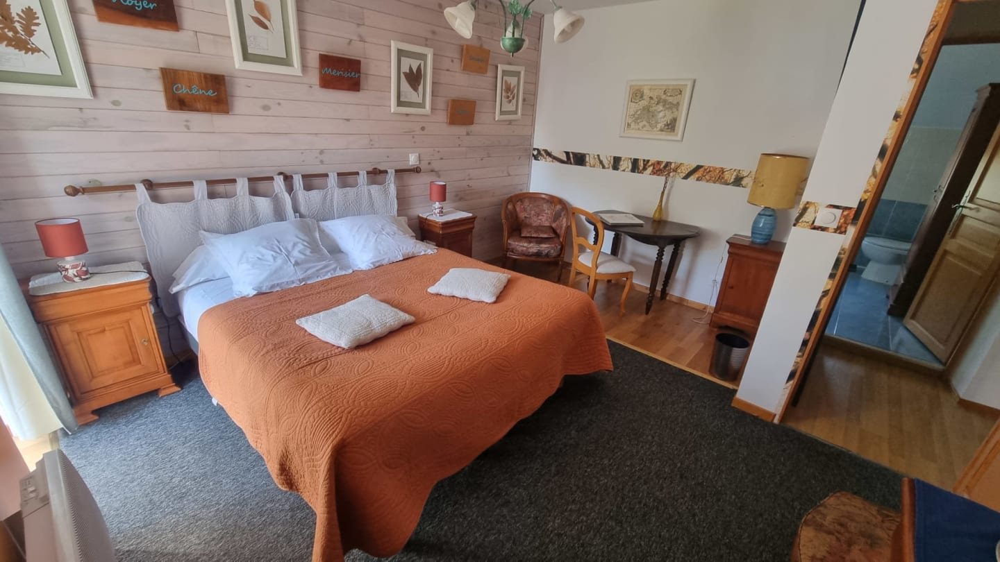
La Gacilly
28 Le Tay, 56200 La Gacilly · 02 99 08 04 25
22 personnes · 3 chambres (2 à 4 pers.) + 3 gîtes (4 à 6 pers.)
92 à 150 € / nuit
20 min de l'église · 16 min du château
Voir le site →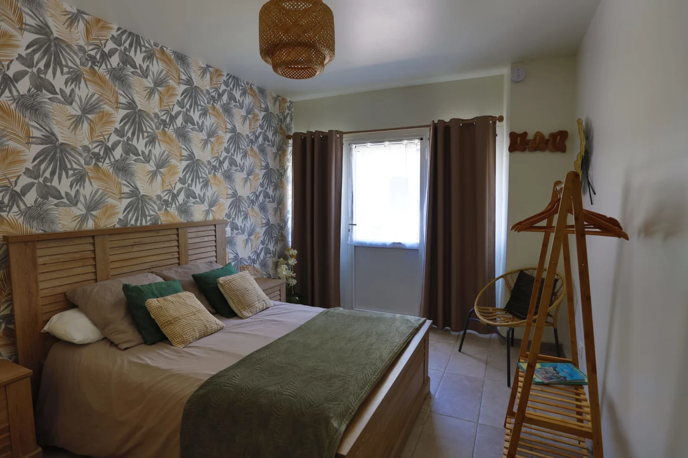
Carentoir
Le Passoir, 56910 Carentoir · 02 99 08 84 52
10 personnes · 5 chambres de 2 personnes
79 à 100 € / nuit — petit déjeuner compris
24 min de l'église · 18 min du château
Voir le site →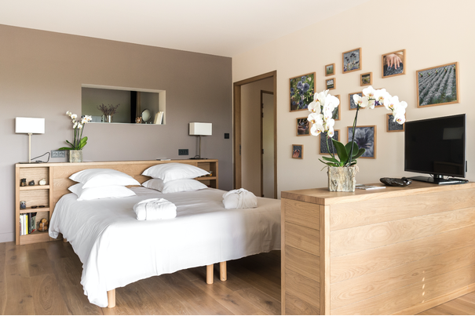
La Gacilly — Hôtel Yves Rocher
Cournon, 56200 La Gacilly · 02 99 08 50 50
Chambres, suites et cabanes de 2 à 4 personnes
280 € / nuit
18 min de l'église · 14 min du château
Voir le site →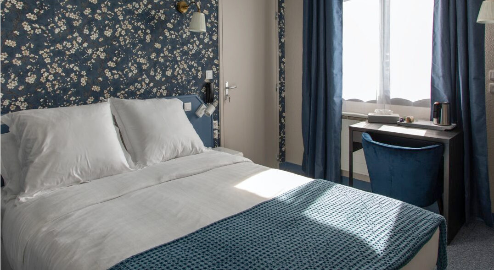
Redon
14 Rue des Douves, 35600 Redon · 02 30 03 96 17
Hôtel · chambres de 2 à 4 personnes · parking privé
110 € / nuit
22 min de l'église · 18 min du château
Voir le site →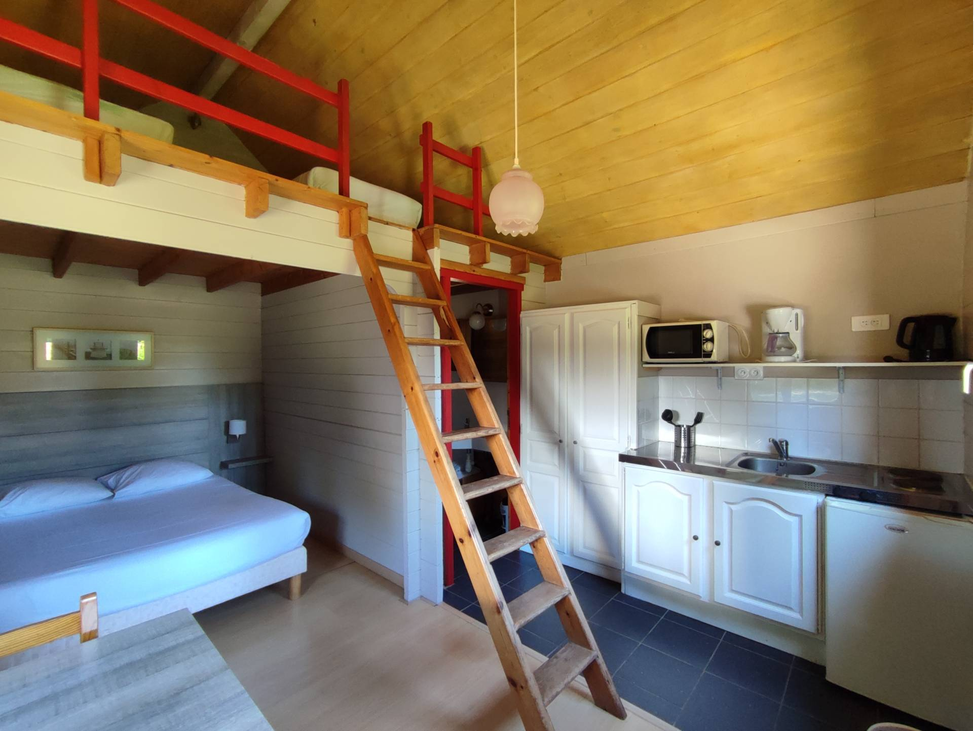
Carentoir
Étang du Beauché, 56910 Carentoir · 02 99 08 84 85
50 personnes · chalets de 2 à 6 personnes · parking privé
60 à 155 € / nuit
24 min de l'église · 20 min du château
Voir le site →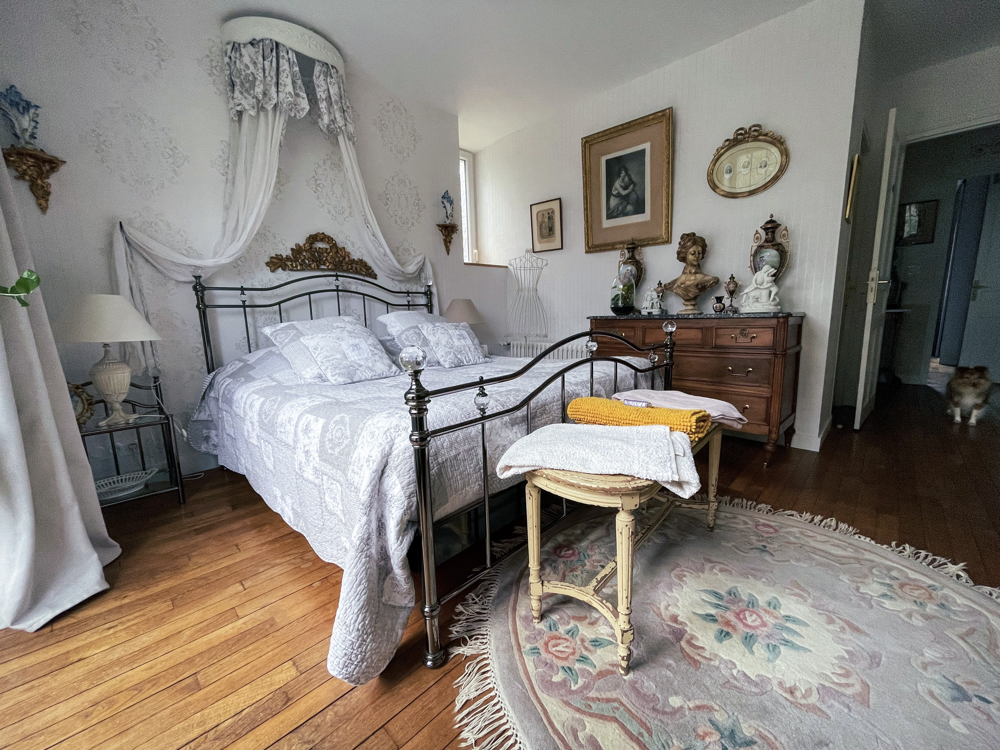
Cournon
16 Rue Etheline, 56200 Cournon · 02 99 70 32 57 / 06 89 12 37 42
10 personnes · 5 chambres de 2 personnes
100 à 140 € / nuit
18 min de l'église · 12 min du château
Voir le site →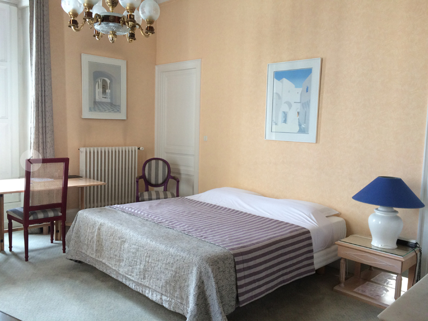
Redon
10 Av. de la Gare, 35600 Redon · 02 99 71 02 04
14 personnes · 7 chambres de 2 personnes
85 à 106 € / nuit
22 min de l'église · 18 min du château
Voir le site →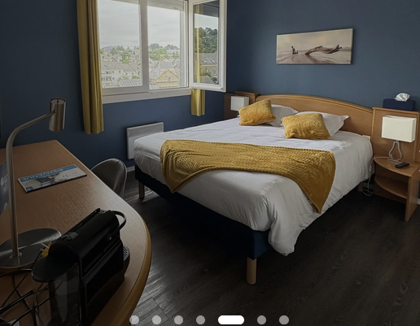
Redon
16 Av. de la Gare, 35600 Redon · 02 99 71 13 20
Hôtel · chambres de 2 pers. + chambres familiales de 3-4 pers.
63 à 125 € / nuit
22 min de l'église · 18 min du château
Voir le site →